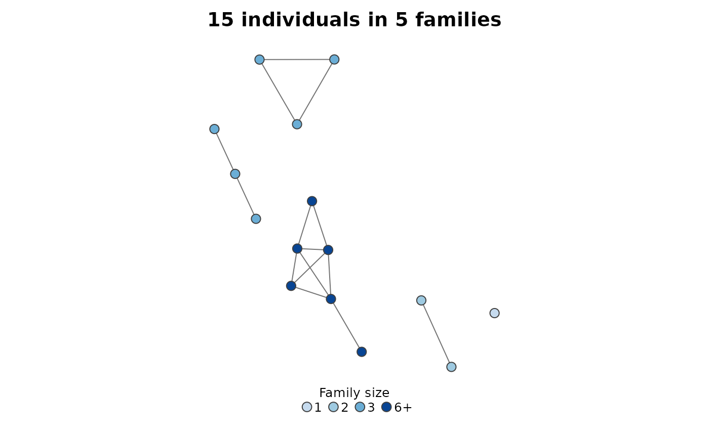
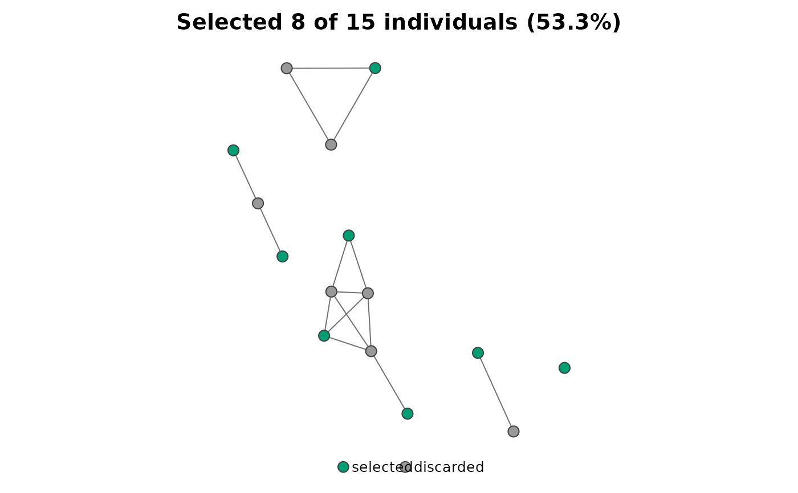
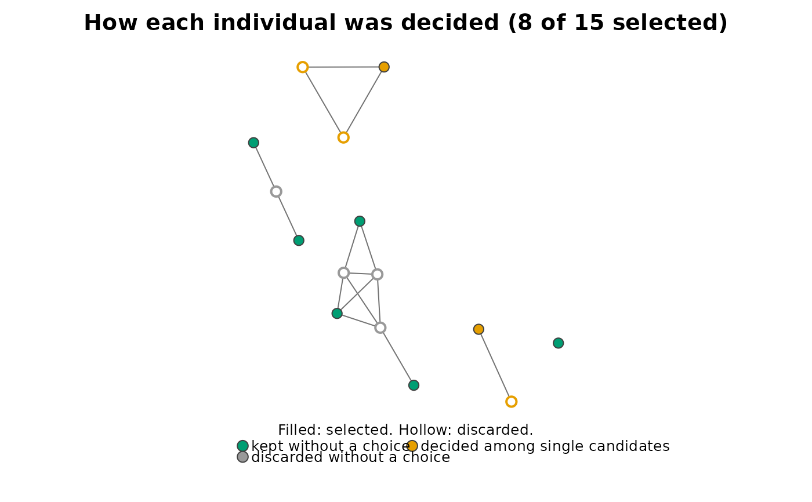
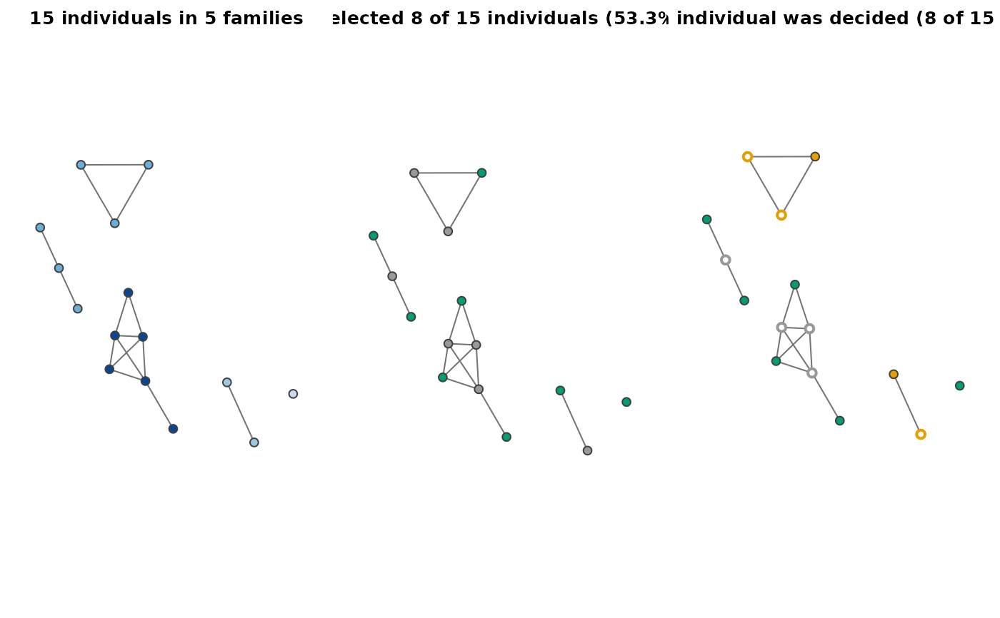
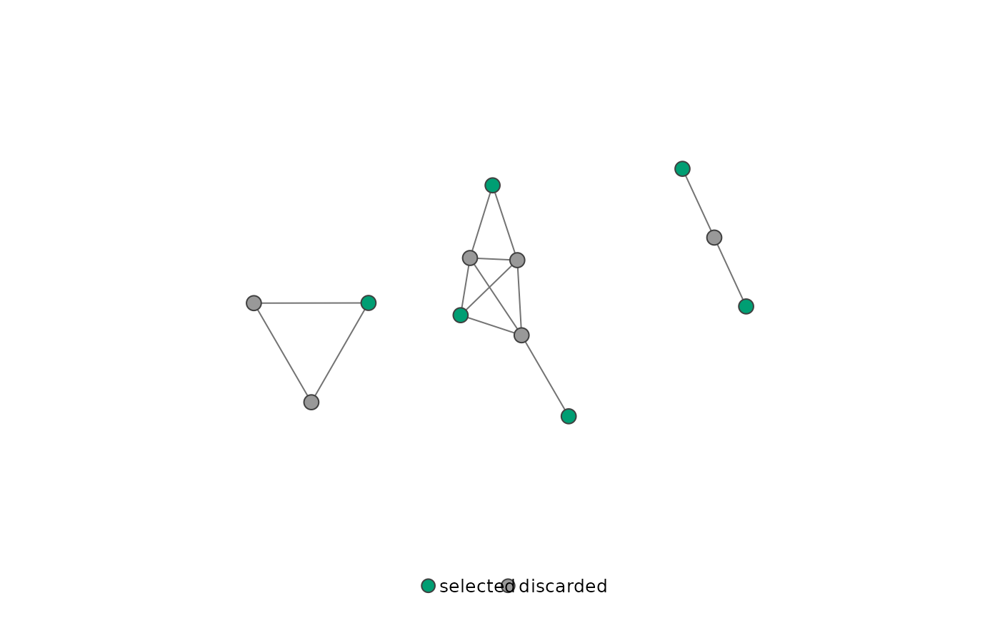

Draws a relatedness network in which each family (connected component) is laid out on its own.
rkn_plot_pre()draws any network, for instance before a selection, with the vertices coloured by the size of their family or by family.plot()draws a selection returned byrkn_select_random,rkn_select_criteriaorrkn_select_global(anrkn_selectionobject): the selected and discarded individuals, how each individual was decided, or the families before the selection, asrkn_plot_pre()does.
All plots of the same network put each individual in the same position, so they can
be compared or combined in panels, for instance with par(mfrow = c(1, 3)).
Usage
# S3 method for class 'rkn_selection'
plot(
x,
type = c("post", "diagnostics", "pre"),
layout = c("auto", "components", "grid"),
seed = 1,
palette = c("colorblind", "classic"),
show_outcome = TRUE,
colour_by = c("size", "family"),
min_family_size = 1,
vertex_size = NULL,
edge_width = 1,
vertex_label = FALSE,
show_legend = TRUE,
main = NULL,
...
)
rkn_plot_pre(
g,
layout = c("auto", "components", "grid"),
seed = 1,
colour_by = c("size", "family"),
min_family_size = 1,
vertex_size = NULL,
edge_width = 1,
vertex_label = FALSE,
show_legend = TRUE,
main = NULL
)Arguments
- x, g
The network to draw: for
plot(), anrkn_selectionobject; forrkn_plot_pre(), an igraph object with the vertex identifiers inV(g)$name.- type
What the colours show (
plot()only):"post"(default): selected and discarded individuals;"diagnostics": how each individual was decided, as described in the section Types of decision ofrkn_selection; requires a selection computed withdiagnostics = TRUE, and is not available for global selections, for which"post"is drawn instead;"pre": the families before the selection, as drawn byrkn_plot_pre().
- layout
Character. How the network is laid out. Each family (connected component) is always drawn on its own; the options differ in how the families are arranged:
"auto"(default):"components"for networks of up to 500 individuals,"grid"for larger networks;"components": the families are packed together around the centre;"grid": each family gets its own cell, ordered by family size (largest first), which keeps large networks readable.
- seed
Integer. Seed of the random layout, applied locally: the random number generator of the session is left untouched. The same seed always gives the same coordinates, so plots of the same network can be compared; another value gives a different arrangement.
- palette
Character. Colours of the
"post"and"diagnostics"plots (plot()only)."colorblind"(default) uses the Okabe-Ito colours, which remain distinguishable with the most common forms of colour blindness;"classic"uses red and green, which many people with colour blindness cannot tell apart.- show_outcome
Logical. In the
"diagnostics"plot (plot()only), ifTRUE(default), selected individuals are drawn as filled vertices and discarded individuals as hollow vertices with a frame in the colour of their class, so the plot shows both how and with which outcome each individual was decided.- colour_by
Character.
"size"(default) colours each vertex by the size of its family, in the classes 1, 2, 3, 4, 5 and 6 or more;"family"gives each family its own colour, which is useful only for a handful of families and is drawn without a legend.- min_family_size
Integer. Only the families with at least this many members are drawn; the default, 1, draws all of them. In a large cohort,
min_family_size = 6shows the few large families, where the selection is least obvious, which would otherwise be lost among pairs and singletons. Each family keeps the shape it has in the plot of the whole network, and the title states the filter.- vertex_size
Numeric. Size of the vertices. By default (
NULL) it decreases with the number of individuals. Enlarging the graphics device does not separate overlapping vertices, because vertex sizes are relative to the plotting region; reducevertex_sizeinstead.- edge_width
Numeric. Width of the edges.
- vertex_label
Logical. If
TRUE, the vertex identifiers are written next to the vertices; this is readable only for small networks.- show_legend
Logical. If
TRUE(default), a legend is drawn below the network.- main
Character. Title of the plot. By default (
NULL) an informative title is generated, such as the number of individuals and families or of selected individuals; replace it withmain = "My title"or remove it withmain = "".- ...
Not used.
Value
rkn_plot_pre() returns NULL and plot() returns x,
both invisibly.
Examples
# A small relatedness network: two parents and their child (P1, P2, C1), a pair of
# siblings (S1, S2), three mutually related individuals (T1, T2, T3), a larger family
# (parents D1 and D2, their children K1 and K2, and K3, born to D2 and D3, a
# half-sibling of K1 and K2) and an unrelated individual (U1).
g <- igraph::graph_from_literal(P1 - C1 - P2, S1 - S2, T1 - T2 - T3 - T1,
D1 - K1 - D2, D1 - K2 - D2, K1 - K2,
D2 - K3 - D3, K1 - K3, K2 - K3, U1)
sex <- c(P1 = "F", C1 = "M", P2 = "M", S1 = "M", S2 = "F", T1 = "M", T2 = "F", T3 = "M",
D1 = "M", K1 = "F", D2 = "F", K2 = "M", K3 = "F", D3 = "M", U1 = "F")
age <- c(P1 = 52, C1 = 21, P2 = 55, S1 = 34, S2 = 31, T1 = 60, T2 = 33, T3 = 29,
D1 = 63, K1 = 35, D2 = 61, K2 = 38, K3 = 30, D3 = 58, U1 = 44)
igraph::V(g)$sex <- unname(sex[igraph::V(g)$name])
igraph::V(g)$age <- unname(age[igraph::V(g)$name])
rkn_plot_pre(g)

sel <- rkn_select_random(g, seed = 1)
plot(sel)

plot(sel, type = "diagnostics")

# The three plots side by side: each individual keeps its position
op <- par(mfrow = c(1, 3))
plot(sel, type = "pre")
plot(sel)
plot(sel, type = "diagnostics")

par(op)
# Only the families with at least 3 members, without a title
plot(sel, min_family_size = 3, main = "")
